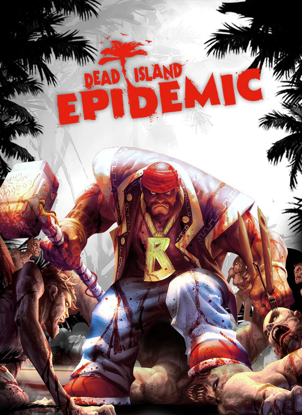

Dead Island: Epidemic
Dead Island: Epidemic
Details
|  | |
| Playtime | Not Played |
| Last Activity | Never |
| Added | 02/12/2022 9:35:48 |
| Modified | 18/05/2025 1:08:55 |
| Completion Status | Not Played |
| Library | Steam |
| Source | Steam |
| Platform | PC (Windows) |
| Release Date | 20/11/2014 |
| Community Score | 39 |
| Critic Score | |
| User Score | |
| Genre | Real Time Strategy (RTS) Role-playing (RPG) Shooter Strategy |
| Developer | Stunlock Studios |
| Publisher | Deep Silver |
| Feature | Co-Operative Multiplayer |
| Links | Wikia Youtube Official Website |
| Tag | Action Action RPG Adventure Co-op Early Access Free to Play Gore Hack and Slash MOBA Multiplayer Online Co-Op PvP RPG Shooter Strategy Survival Team-Based Top-Down Top-Down Shooter Zombies |
Description
PLAY FREE NOW!
It's you versus them. Or you versus them versus them versus them.
We’ve got two core modes – either team up with 3 other survivors and take on the zombie menace together in PvE co-op Crossroads mode, or take the fight to other players in our three-team "PvPvPvE" Scavenger mode where you'll battle it out in a competition to grab supplies, hold key points, outsmart the competition and blast through hordes of zombies.

Fight for your survival in our PvE-mode Crossroads. You set up camp in the morning and carry out four different missions over the course of a day in ever-changing maps and mission types. The missions range from freeing trapped characters and gathering supplies, to fighting off hordes of zombies or defeating bosses. Zombies have different attributes and change the way you fight them: From range-damage resistant to faster running, harder hitting zombies - you will have to adapt how you fight the virus.
Crossroads also rewards and tracks your performance, scaling the difficulty of the next mission accordingly.

“The enemy of my enemy is my friend” – at least for a while
Epidemic’s PvP-mode pits three teams of 4 players each against each other in zombie-infested maps. The third team adds a new dynamic to this competitive mode and requires you to re-think your winning strategy: Do you build up enough of a lead to win before you are being dismantled by two teams? Or do you play it smart and align your goals with one of the adversary teams temporarily? The goal is to capture and hold strategic points and gather as many resources as possible to be victorious.

Take direct control of your character with the WASD keys plus mouse input and react to situations on the fly by switching between melee and ranged weapons.

Build and adjust weapons to your playstyle:

From rotund, fanny-pack wearing badass tourists to redheads wielding weaponized crabs – and everything in between. Epidemic has a constantly expanding roster of unlikely heroes supporting varying play styles - whether you like your action up-close and personal, at range or through supporting your teammates.
Each character has an array of (often very bizarre) skills with which to wreak havoc - use these strategically in order to inflict maximum punishment on both the undead and those-you-want-to-be-dead.
Time to DI:E
Dead Island: Epidemic is a multiplayer action hack & slash arena. Players duke it out over supply points using an arsenal of crafted weaponry, a bevy of devastating powers, and good old-fashioned teamwork. And yeah, we've got zombies too - so there's that.Co-Operate or Compete
It's you versus them. Or you versus them versus them versus them.
We’ve got two core modes – either team up with 3 other survivors and take on the zombie menace together in PvE co-op Crossroads mode, or take the fight to other players in our three-team "PvPvPvE" Scavenger mode where you'll battle it out in a competition to grab supplies, hold key points, outsmart the competition and blast through hordes of zombies.
Fight for your survival in our PvE-mode Crossroads. You set up camp in the morning and carry out four different missions over the course of a day in ever-changing maps and mission types. The missions range from freeing trapped characters and gathering supplies, to fighting off hordes of zombies or defeating bosses. Zombies have different attributes and change the way you fight them: From range-damage resistant to faster running, harder hitting zombies - you will have to adapt how you fight the virus.
Crossroads also rewards and tracks your performance, scaling the difficulty of the next mission accordingly.
“The enemy of my enemy is my friend” – at least for a while
Epidemic’s PvP-mode pits three teams of 4 players each against each other in zombie-infested maps. The third team adds a new dynamic to this competitive mode and requires you to re-think your winning strategy: Do you build up enough of a lead to win before you are being dismantled by two teams? Or do you play it smart and align your goals with one of the adversary teams temporarily? The goal is to capture and hold strategic points and gather as many resources as possible to be victorious.
Combat
Take direct control of your character with the WASD keys plus mouse input and react to situations on the fly by switching between melee and ranged weapons.
Build and adjust weapons to your playstyle:
- Earn blueprints from six different categories and build your weapon arsenal
- Most weapons come with unique features and fit a specific role
- You also earn weapon modifications which can be installed on to your weapons and add various attributes
From rotund, fanny-pack wearing badass tourists to redheads wielding weaponized crabs – and everything in between. Epidemic has a constantly expanding roster of unlikely heroes supporting varying play styles - whether you like your action up-close and personal, at range or through supporting your teammates.
Each character has an array of (often very bizarre) skills with which to wreak havoc - use these strategically in order to inflict maximum punishment on both the undead and those-you-want-to-be-dead.